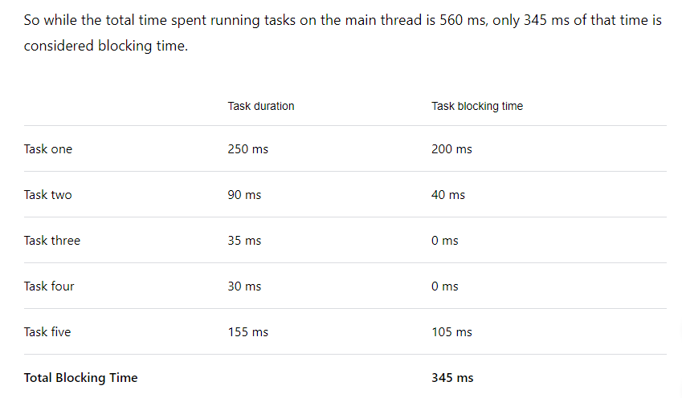
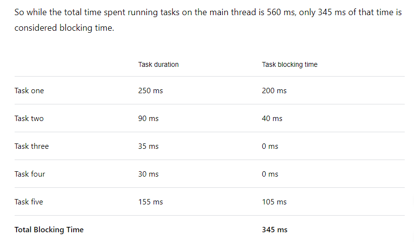

elzero 2022
19- Unray operators (plus and negative)
it's used to turn string into number
console.log(+"100") => 100 as a number
unary operators VS number() Vs parseInt()
according to the best answer in
stack overflow
unary operators and number() are the same they try to change the
whole string into a number
trying console.log(+"100px") will return
NaN
but as for parseInt("100px") it will return
100
as the mechansim of parseInt is it
keeps returning numbers found in
the string untill it encounteres string that is not a number so it
ignores all characters after that
also
Number() and
unray
evaluate whatever you give to them
for example:
Number("") => 0
where
parseInt("") => NaN
24- Number methods
(100).toString(); => "100"
100..toString(); => "100"
the extra dot is for the editor as it expects something like 100.5
so you put the extra dot to tell it it's for the function
100.55555.toFixed(2); => 100.56
parseInt("100"); => 100
parseInt("100px"); => 100
parseInt("px100"); => NaN
parseInt("100.55"); => 100
parseFloat("100.55px"); => 100.55
Number.isInteger("100"); => false
Number.isInteger(100); => true
Number.isInteger(100.55); => false
Nubmer.isNan(100); => false
Nubmer.isNan("lol"); => true
Number("100px"); => NaN
Number("100"); => 100
Number("100.4"); => 100.4
25- Math object
Math.round(99.2); => 99
Math.round(99.5); => 100
Math.ceil(99.2); => 100
Math.floor(99.9); => 99
Math.min(10, 20, 100, -100, 90); => -100
Math.max(10, 20, 100, -100, 90); => 100
Math.pow(2, 4); => 16
also
you can use 2**4 to give you the same
results
console.log(2**4) => 16
Math.trunc(99.5); => 99
Math.trunc(99.2); => 99
returns the integer number and removes the decimals
27- string methods
'hola'[0] => h
'hola'[2] => l
'hola'.charAt(0) => h
'hola'.charAt(2) => l
' hola '.trim() => 'hola'
removes the spaces from the start and the end of the string
'hola'.toUpperCase() => HOLA
'hola'.toLowerCase() => hola
' hola '.trim().charAt(2).toUpperCase() => L
you can use more than one method together
28- string methods part 2
"Elzero Web School".indexOf("Web");
=> 7
"Elzero Web School" .indexOf("Web", 8);
=> -1 (which means error or didn't find what you looking for) and
(the second argument "8" is the start of searching and it's
optional)
"Elzero Web School".indexOf("o"); => 5
"Elzero Web School".lastIndexOf("o");
=> 15
"Elzero Web School".slice(2, 6) => "zero"
(last index is not included so the space after the "o" wasn't
included) and (both arguments are indexes)
"Elzero Web School".slice(-5, -3);
=> "ch" (when negative numbers it starts from -1 not -0 obviously)
and (still last index is not included)
"Elzero Web School".slice(6, 2); => if the
first argument is greater than the second it returns
empty string ''.
"Elzero Web School".repeat(5); => "Elzero
Web SchoolElzero Web SchoolElzero Web SchoolElzero Web
SchoolElzero Web School"
"Elzero Web School".split("", 6); => ['E',
'l', 'z', 'e', 'r', 'o']
(6 here is length of the array not an index. the length is 6 it
stops at index 5)
"Elzero Web School".split(" "); =>
['Elzero', 'web', 'school']
29- string method part 3
"Elzero Web School".substring(2, 6);
=> "zero" (last index not included)
difference between
.substring() and .slice()
.substring() you can switch values with
it while with .slice() you can't
"Elzero Web School".substring(6, 2);
=> "zero" (it switches the two argument in case the first one is
greater than the second one so behind the scenes its (2, 6))
"Elzero Web School".slice(6, 2); => ''
nothing
.substring() treats any negative value as
0 while .slice() deals with negative
values normally
"Elzero Web School"
.substring(-10, 9);
=> "Elzero we" (any negative value is treated as 0 so behind
scenes it's (0, 9))
"Elzero Web School".slice(-10, 9);
=> "We"
"Elzero Web School".substring(a.length - 5, a.length - 3);
=> "ch"
(a) here is a varible with the senetence "Elzero Web School"
stored in it
"Elzero Web School".substr(0, 6); =>
"Elzero" (the second argument is a length not an index) and (the
second argument is optional if you don't type it starts from the
first argument until the end the of the string)
note that it's depercated and the quote below is from
MDN
Deprecated: This feature is no longer
recommended. Though some browsers might still support it, it may
have already been removed from the relevant web standards, may
be in the process of being dropped, or may only be kept for
compatibility purposes. Avoid using it, and update existing code
if possible; see the compatibility table at the bottom of this
page to guide your decision. Be aware that this feature may
cease to work at any time.
"Elzero Web School".substr(-3); => "ool"
"Elzero Web School".substr(-5, 2);
=> "ch"
"Elzero Web School".substr(-5, -2);
=> "" (it doesn't take negative lengths)
"Elzero Web School".includes("Web");
=> true
"Elzero Web School".includes("Web", 8);
=> false (the second argument is starting index and optional)
"Elzero Web School".startsWith("E");
=> true
"Elzero Web School".startsWith("E", 2);
=> false
"Elzero Web School".startsWith("z", 2);
=> true
you can use it to check if a certain character is at certain index
or not
"Elzero Web School".endsWith("l");
=> true
"Elzero Web School"
.endsWith("o", 6);
=> true (the second argument is index not a length)
31- Comparison Operators (==, ===, !=, !==, greater than, less than)
The output is true and false. Here is the explanation, In Javascript
relational operators are evaluated from left to right, false equals
0, and true equals 1 for number comparisons. So comparison
evaluation is something like this,
rest of the lesson no need for notes revise it from
elzero.org
32 - Logical Operators
Ez no notes neede revise it from
elzero.org
33 - If Conditions
note that the else if () {} will be excuted
only if the previous condition
is false
rest of the lesson doesn't need notes taken revise from
elzero.org
34 - nested if condtion
no notes needed revise the lesson from
elzero.org
35 - Conditional ternary Operator
in case you want to have else if with
ternary:
to make it easy to remember notice the sequence
? senetence : then
? senetence :
you can't end with a senetence after a (?), it should be after a (:)
revise rest of the lesson
elzero.org
36 - Nullish Coalescing Operator & Logical Or
logical or ( || )
console.log(`The Price Is ${price || 200}`);
the code above will return 200 if the price is one of the options
below:
- null
- undefind
- false
- ""
- 0
- or any falsey value
Nullish Coalescing Operator ( ?? )
console.log(`The Price Is ${price ?? 200}`);
the code above returns 200 if price is either:
and only if the variable equals
to either one of these (not any other fasley value)
37 - If Condition Challenge
38 - Switch Statement
note that swich compares with
identical operator
meaning that if your variable is like this
let myvar = "5"
this is a string variable not a number so if you write
case 5: it won't work
if you write case "5": it will work
you can put the default: statement
anywhere you want just make sure you put a
break; statement with it if you don't put
it at the end
39- Array big introduction
to check if the varibale is array or not
console.log(Array.isArray(myArray))
note: that
array[-1] doesn't return the last element in
the array
in order to get the last element you either use
array[array.length-1]
or just use array.at(-1)
40- Using Length With Array
no notes needed
41- Add And Remove From Array
to add an element to the
begning of the array
myArray.
unshift(element, element, ...)
to add an element to the
end of the array
myArray. push(element, element, ...)
to remove element from the
begening of the array
myArray. shift()
note: shift() method and pop()
method return the removed element so you can use it how ever you
see, for example
let myRemoved = myArray.shift();
to remove element from
the end of the array
myArray. pop()
Note: all pervious methods make permenant changes on the main
array
43- Searching Array
let myArray = ["Ahmed", "Mohamed", "Osama", "Ahmed"]
to find index of an element in an array
myArray. indexOf("Ahmed") => 0
myArray. lastIndexOf("element") => 3
myArray. indexOf("Ahmed", 2) => 3
if the element is not found it returns -1
the second argument is the starting index of the search and it's
optional
indexOf() method wihtout the starting index
argument returns the index of the first found value even if the
value is in the array twice
44- Sorting Arrays
let myArray= [10, "sayed", "mohamed", "90", 1000, 100, 20, "10",
-20, -10]
myArray. sort() =>
[-10, -20, 10, "10", 100, 1000, 20, "20", "90", "mohamed",
"sayed"]
the main idea is it sorts the numbers from the smalles to the
largest then normal strings in the normal alphabitical order
but notice that 20 came after 1000 as the method's mechanism is it
starts with the numbers starting with 1 and sorts all numbers
starting with 1 from the smalles to the largest then goes to all
numbers starting with 2 and does the same and so on...
to reverse the order of the array
whatever the order is
myArray.reverse() => the result is reverse
of the main array that is under (heading 44- sorting array)
[-10, -20, "10", 20, 100, 1000, "90", "mohamed", "sayed", 10]
Note: both previous methods do permenant change to the
array
45- Slicing Array (Slice & Splice)
let myFriends = ["Ahmed", "Sayed", "Ali", "Osama", "Gamal", "Ameer"]
to take sub array from this array
myFriends.
slice( starting index ,
ending index *not included in the slice* )
myFriends. slice(0,2) => ["Ahmed",
"Sayed"]
myFriends. slice(0, -2) => ["Ahmed",
"Sayed", "Ali", "Osama"]
myFriends. slice(4, 1) => []
to remove elemnts from the array
or remove and add elements at the same time
myFriends.
splice(
starting index,
numbers of elements to delete or remove,
elements to add
)
myFriends.
splice(0, 1, "marwan", "hussien") =>
["marwan", "hussien", "Sayed", "Ali", "Osama", "Gamal", "Ameer"]
removed and added items at the same time
myFriends.
splice(2, 0, "marwan", "hussien") =>
["Ahmed", "Sayed", "marwan", "hussien", "Ali", "Osama", "Gamal",
"Ameer"]
just added items without removing
myFriends.
splice(2, 1) =>
["Ahmed", "Sayed", "Osama", "Gamal", "Ameer"]
just removed element ("Ali") without adding any
Note: removed elements by splice() are returned so you can
store them in a variable or console them or whatever
Note: splice makes a permenant change on the array
46- Joining Arrays
you can use .concat() method to add (pre
declared arrays, elements or made up arrays) to some array
let allFriends = myFriends.
concat(myNewFriends, schoolFriends, "Gameel", ['hossam',
'nabil'])
to join all the array elements in one string
.join(separator)
myFriends. join("|") =>
Ahmed|Sayed|Ali|Osama|Gamal|Ameer
myFriends. join() =>
Ahmed,Sayed,Ali,Osama,Gamal,Ameer
47- Loop-For And Concept Of Loop
no notes needed
48- Looping On Sequences
no notes needed
50- Nested Loops And Trainings
no notes needed
break; & continue;
1- break;
is used to break the loop at certain condition
note: any code after the
break; statement or even after the if(){}
block that containes break statement will not be excuted
for(let i =0; i<5; i++) {
console.log(i);
if (i === 2) { break; }
}
this will print 0,1,2 and then break since the console.log(i) is
before the breaking.
if you place the console.log statment after the if block 2 won't
be printed
2- continue;
is used to skip an itiration
for(let i =0; i<5; i++) {
if (i === 2) { continue; }
console.log(i);
}
notice that console.log(i) is placed after if(){} block to be
skipped if the condition is true otherwise
continue; will be useless as if
console.log() is before the if(){} block, (i) will be printed then
continue; will skip the reset of the code
which is nothing (in this case)
for loop label
if you have a loop nested in a main loop and you want to break the
main loop based on a condition in the nested loop ... if you put
just break; in the nested loop it will
just break the nested loop here comes the use of labels
so in the first assumption that you just write
break; it will be excatly like
break nestedLoop;
52- Loop-For Advanced Example
no notes needed
53- practice-Add Products To Page
no notes needed, good lesson though
54- Loop-While
careful not to type the increment statement (index+=1) or whatever
the statement is; as it will cause an infinite loop to occure
55- Loop-Do While
while VS do-while
in the do while case the code will be excuted once if the
condition between the while parentheses is false.
whereas in the while case the code will never be excuted if the
condition is false
56- Loop-challenge
no notes needed
57- Function Intro And Basic Usage
no notes needed
58- Function Advanced Examples
no notes needed
59- Function Return And Use Cases
-
any code after the
return ...; statement won't be excuted
-
you can't but the returned code in another line
fucntion sayhi() { return
'hi'; }
=> undefiend
and you will notice the editor will make it like this
{return;
hi;}
unless you write it like that
return (
'hi');
-
you can use the
return ...; statement to break a loop in
a function
notice that the 'interrupting' sentence is not printed in the
console as we didn't call the fucntion in a console and thus it's
return is not printed
60 - Function Default Parameters
to assign default value to the functoin parameter simply add equal
sign (=) and your defalut value like a normal assignment
function sayHello(username,
age = "you didn't enter age" ) {
console.log(`hello ${username} your age is ${age}`) }
in this case if the function is called wihtout the age argument the
the message will be =>
hello osama (for example) your age is you didn't enter age
61- Function Rest Parameters
rest parameter is used when you don't know the numbers of arguments
that will be sent to the function
rest parameter is simply an array
you can use rest parameter with normal parameters like
function(param1, param2, ...otherpramas) {}
but you must put the reset parameter as the last one as by logic it
takes all the arguments sent to it so any other parameter after it
won't take any
62- Function Ultimate Practice
no notes needed, good lesson though
63- Random Arguments Function Challenge
no notes needed, good lesson though
64- Anonymous Function And Practice
no notes needed
65- Return Nested Function
no notes needed
66 - Arrow Function Syntax
no notes needed
67 - Scope-Global And Local
the usual behaviour of function when variables are called (used) is
that it looks for the varibles inside out
meaning that it starts looking in the function scoop if it finds the
variables it uses their value inside the function (
even if they have different values outside the function
). if it doesn't find them it goes to the outer scope, if it doesn't
find them in that scope, then it goes to the outer scope if there is
and so on

68- Scope-Block
no notes needed
69- Scope-Lexical (Static)
no notes needed
70- Arrow Function Challenge
no notes needed
71- Higher Order Functions-Map
map takes three parameters
- the current element parameter (mandatory)
- the current element index (optional)
- the array map is performed on (optional)
number ten as logged in console is "this" but I still don't know
what "this" does in this situation
as far as I understood. Whatever you type as the second argument
(after the function) will be assigned to the "this" variable
if you don't but any thing "this" returns the window object
72- Higher Order Functions - Map Practice
dealing with NaN can be tricky as
typeof NaN => 'number'
NaN === NaN false
so in order to check if a given value is not a number NaN use the
following syntax
isNaN(your value)
also notice
isNaN('hola') => true
isNaN(10) => flase
make sure you don't get confused
also make sure you give
problem solvging playlist
and
problem solving sites
a look
no further notes needed to be taken, but good lesson though
73- Higher Order Functions-Filter
no notes needed
74- Higher Order Functions -Filter Practice
no notes needed
75- Higher Order Functions-Reduce
the job if reducer function is as the name tells it reduces the
whole array into one value and this should be when you use it
reducer function takes 2 parameters
-
callback functoin (the actual function that makes the reduction)
- initial value
-
acc: is a short for accumulator which is the sum variable where
you store the value from the previous calculatoin to preform on
the new value again and so on (offcourse you can call it
whatever you want)
accumulator value in the first itiration is the initial value
you set. If the initial value is not set (as it's optional) then
accumulator's value is the first element in the array
-
current: the element that will be calculated with the
accumulator. in this case the next number that will be added
current value in the first itiration is the first element of the
array if the initial value of the accumulator is set. If the
initial value is not set then since the accumulator will be the
first element the current value is the second element
-
index: index of the current element that is to be calculated
with the accumulator
so in the first itiratoin if the initial value is set index = 0
the first index in the array, if the initial value is not set
index = 1 the second value of the array
- arr: is the array being travested through
of course you can name these parameters any name you want
index, arr parameters are optional
76- Higher Order Functions-Reduce
no notes neede
77- Higher Order Functions-ForEach And Practice
forEach doesn't return any thing it just applies the callback
function on each element of the array
no further notes needed
78- Higher Order Functions - Challenge
79 - Object - Introduction
no notes needed
80 - Dot Notation vs Bracket Notation
the property "the country" is between qoutatoins because it's
non-valid identifier as it
contains space (other characters that make the identifier not
vaild the hyphen (-) and starting with numbers ("1st country") and
whatever makes a variable name not vaild)
bracket notaion
accepts non-vaild
identifier while dot notaion doesn't
user["the country"] => egypt
user."the country" => error
bracket notaion accepts varibales with the same name of an
existing property, while dot notaion doesn't
dynamicProp = 'the country'
user[dynamicProp] => egypt
user.dynamicProp => error
bracket notation also accpets normal properties
user["name"] => osama
note the property is between quotes otherwise it will tell you it is
not defined variable
81 - Nested Object And Advanced Trainings
notice when we wanted to access a property of the object we accessed
it like usual
if the code was like
available === true
the code will tell you it's an un-defined variable as it thinks it's
a global-scope variable
82 - Create Object With New Keyword
to add property or a method to an object
also this way is used to update an existing property
you can declare an object using the
new Keyword
let myObj =
new Object()
and you can declare it with initial properties like the normal
case
let myObj =
new Object({ age: 20, county: "egypt", })
83 - This Keyword
this is a reserved keyword and it refers to different things
depending on the context
in case of functions the general role is "this" refers to the owner
of the function
so if you write just
function() {return this;}
it will return the windowobject
but if you write the code below
document.getElementById("cl").onclick = function () {
console.log(this); };
it will return the clicked button
also if you write the code below
this will return the object which is the owner of the function
"this" is written in
note that "this" changes in
strict mode
84 - Create Object With Create Method
as far as I understood the idea of the
Object.create(some-object)
is heritage
as you can see the properties and methods of the main object (car)
is in the prototype of the secondary object (typeA) which means all
properties and methods of the main object are available to the
secondary object
now you may want to either add another properties (features of the
car) or methods like
but if you notice in the other console.log() the method still
returns 8 not 6 (2 less doors) why is that ?
the mistake that happened here is that in the main object you typed
car.doors + car.wheels
so where ever you call the method it's going to go the car object
and use it's information
the solution for that problem is simply use
this
keywrod

note the O in
Object.create() is a capital letter
85 - Create Object With Assign Method
Object.assign(target-object (to copy to), object (to copy from),
object (to copy from))
let newObj = Object.assign(obj3, obj1, obj2)
it is used to copy objects to another object
what the code above basically does is that it copies the 3 objects
into another object
-
if you don't have a target object and you want to copy objects
into new object you just made. you simply type
{} in place of target object
let newObj = Object.assign({}, obj1)
-
also you can add properties while coping other objects
let newObj = Object.assign({}, obj1, {property1: 'hola',
property2: 'hii'})
if you have the same property in more than one object they simply
overwrite
the last added object had prop1 set to 1 so the final result is 1
86 - What Is DOM And Select Elements
note the difference between
document.querySelector()
and
document.querySelectorAll()
the first method gets you the first element it finds
for example
let myElement = document.querySelector('.some-class')
will return the first element with the class "some-class"
while
document.querySelectorAll('.some-class')
will get you all elements having class "some-class"
no notes needed for the rest of the lesson
87 - Get Set Elements Content And Attributes
if you use with the div above:
.innerHtml
it returns whatever html in the div
.innerText
it returns just the text inside of it and interprets the html tags
if you notice: innerHtml and innerText are properties so you can
set them as well
myDiv.innerHtml = "text from <span> js </span> file"
the result is
text from js file
myDiv.innertext = "text from <span> js </span> file"
the result is
text from <span> js </span> file
so you can easly type html tags with js instead of typing html
entities like "& lt" and "& gt"
to access the document images
document.images => returns an html
collection that you can handle like an array
(document.images[0].alt)
you can get and set attributes
document.images[0].src = https//:google.com
and if you type an attribute that is not in the img it will add it
to add class attribute documnet.images[0].
className
all these things can be done to any element
myElemnt.getAttribute("class") gets you
the attribute between the ("")
myElemnt.setAttribute("class", "updated")
sets the attribute (first parameter) to the new value (second
parameter)
88 - Check Attributes And Examples
myElement.attributes returns a NodeMap with
all the attributes in the element that you can handle like an array
note that there's no () after .attributes
myElement.hasAttribute('class')
returns ture or false depending on whether the element has the given
attribute (class in this example) or not
myElement.removeAttribute('class')
removes the attribute from the element
notice that it removes the attribute from the element not just
setting the attribute to ""
myElement.hasAttributes() returns true or
false depending on whether the element has any attributes or not
notice they are attribute"s" (plural) not attribute
also you don't type anything in the ()
89 - Create And Append Elements
myElement = document.createElement('div')
to create an element (div in the example)
notice that it just creates the element but doesn't add it to the
body untill you add it (using .appendChild() or any other method)
myText = document.createTextNode('this is just text')
to create text
again this is just a text it's not added to any element yet
myComment = document.createComment('this is comment')
to create a comment
myAttr = document.createAttribute('data-custom')
to create an attribute
to add the careated attribute to an element
myElement.setAttributeNode(myAtt)
.setAttributeNode() accepts
only created attributes, if you pass a text it throws an
error
difference between
.setAttributeNode()
and
.setAttribute()
-
in setAttribute() you need to type the value of the attribute
you are setting while in set attributeNode() you add just the
attribute without a vlaue
-
setAttribute() doesn't accept created attribute and
setAttributeNode() doesn't accept text
but notice that you can pass a string variable to
setAttribute() and it won't cause any errors
to add a child inside an element
myElement.appendChild(theElement)
with .appendChild() you can add the text
node and the comment you created in the above example to the div
and then add the div to the body
document.body.appendChild(myDiv)
90 - Product With Title And Description
no notes needed
91 - Deal With Children's
children are 2 types
elements
and nodes
- text
- spaces (consdered as text)
- comments
myElement.children to get all "element"
(not all children)
children of an element (myElement in this example)
myElement.childNodes to get all children of
the element (nodes and elements)
so in this div
myElement.children => htmlcollection(2)
[p, span]
myElement.childNodes => htmlcollection(13)
- text (space)
- text (space)
- text (hello)
- text (space)
- text (space)
- p
- text (space)
- comment
- text (space)
- text (and)
- text (space)
- span
myElement.firstChild
to get whatever the first child in the element is (node or element)
myElement.firstElementChild
to get the first element child in the element
myElement.lastChild to get whatever last
child of the element is (node or element)
myElement.lastElementChild
to get the last element child in the element
92 - DOM Events
there are 2 ways to use events
-
in html code
<button onclick = 'someFunciton()'>
-
in javascript
myButton.onclick = function() {//some code here}
events mentioned in the lesson
- onclick
- oncontextmenu
- onmouseenter
- onmouseleave
- onload
- onscroll
- onresize
-
onfocus => when click on the
input filed and the typing indicator apppears
-
onblur => when you leave input
field
- onsubmit => used with forms
93 - Validate Form And Prevent Default
myButton.onclick = function (e) {e.preventDefault()}
to prevent the default behaviour of the function
you can pass any argument name you want (event or e or whatever)
rest of the lesson doesn't need notes to be taken
94 - Event Simulation - Click Focus Blur
element.click() => to click on the element
from the code
element.focus() => to focus on the input
field from the code
element.blur() => to blur from the input
field from the code
95 - Class List Object And Methods
element.classList => returns a list of
classes in the element
element.classList.length => returns the
number of classes in the element
element.classList.contains('class') =>
returns ture or false depneding on whether the class exists or not
element.classList.item(index) => returns the
class in the given index of the class list (don't know the
difference between that code and that code) =>
element.classList[index]
element.classList.add('class', 'class') =>
to add a class or classes to the element
takes more than a class
element.classList.remove('class', 'class')
=> to remove a class or classes from the element
takes more than a class
element.classList.toggle('class') => if the
class exists in the element it removes it, if the class doesn't
exist in the element it adds it
takes only one class
96 - CSS Styling And Stylesheets
element.style.<property> = 'value' =>
to set an in-line property to the element (replace "property" with
whatever you want like color or fontWeight)
element.style.color = 'red'
two-word properties are written in camel case like this
"backgroundColor" or "fontWeight"
element.style.cssText = 'prop: value; prop: value'
=> to set an in-line property to the element (but this method allows
you to write more than one property at once)
element.style.setProperty('property', 'value', priority)
=> to set an in-line property to the element
in the priority place you wirte 'important' if you want to add the
'!important' flag to the property
notice in the js code you don't write the '!'
if you don't want to add important you leave the priority place
blank
element.style.removeProperty('property')
=> to remove an in-line property from the element
document.styleSheets[style sheet index].cssRules[the style
index].setProperty('property', 'value', priority)
=> to add a property
in the css file to the element
every styling like p {} or .someClass {} is called a rule
in the course elzero wrote .styleSheets[0]
.rules[0]
but this property is depercated and replaced with
.cssRules[]
document.styleSheets[style sheet index].cssRules[the style
index].removeProperty('property', 'value', priority)
=> to remove a property from the css file from an element
97 - Before, After, Prepend, Append, Remove
myElement.before(element or text) => to
add an element or a text before a certain element (myElement)
note that the added element or text is added before the element
not inside it unlike (append() and .prepedn()) which place the
added element or text inside the element
myElement.after(element, or text) => to add
and element or a text after a certain element (myElement)
myElement.append(element or text) => to
add an element or text at the end of the main element (myElement)
myElement.prepend(element or text) => to
add an element or text at the start of the main element (myElement)
element.remove() => to remove the element
from the dom tree (unlike display:none which removes the element
from the ui but it still can be accessed from the inspect)
98 - DOM Traversing
element.nextSibling => to return the next
node sibling of the element (meaning if the next thing is a
text, space or a comment it will return it)
element.perviousSibling => to return the
previous node sibling of the element (meaning if the previous
thing is a text, space or a comment it will return it)
element.nextElementSibling => to return the
next element sibling of the element (meaning if there is a
text, space or a comment after the element it will ignore it and
returns the first element after the main element like <p> or
<div>)
element.perviousElementSibling => to return
the pervious element sibling of the element (meaning if there
is a text, space or a comment after the element it will ignore it
and returns the first element after the main element like <p>
or <div>)
element.parentElement => to return the
parent of the element
99 - DOM Cloning
element.cloneNode(true/false) => to make a
copy of the element
true/false are values for the "deep". The default value is false
which copies the element with the attributes
but without the children
to clone the element with it's children type .cloneNode(true)
100 - AddEventListener
advantages of .addEventListner() over
.onevent() is that with addEventListener
you can add more than event while with onevent if you type another
statement the last one overwrites
element.addEventListner('click', functin() {})
=> to add a certain function that gets excuted when the event is
applied to the element
the other advantage elzero explained it with an example. You have
a paragraph when you click it logs something in the console and
adds a clone of itself to the body
you want the clone to logs another statement in the console when
it's clicked
if you use onevent on the clone it throws error as you didn't
click the main paragraph yet and thus there is no clone yet. So he
uses addEventlistner('click', function() {}) on the body and
checks if the e.target has a class of
'cloned' (a class he adds it to the cloned paragraphes) it logs
that other thing
the question here is couldn't he do the same with the onevent
?????
101 - DOM Challenge
no notes needed
102 - What Is BOM?
no notes needed
103 - Alert, Confirm, Prompt
no notes needed
104 - setTimeout and clearTimeout
setTimeout(function(){} or named funciton, time in milliseconds,
argument, argument)
=> to excute the given function after the given time
the arguments are optional. In case of the named function takes
arguments if you type it like this it's instantly excuted
so if you want to send arguments to the function you type them
like this
notice in the right way there is no parentheses () as it calls the
function instantly with no arguments sent
clearTimeout(handler) => to stop setTimeout
from working
to be able to clear a setTimeout you need to store it in a
varibale (handler)
notice if you log the handler you'll findout it's a number
(the first setTimeout handler is 1) and so on
105 - setInterval and clearInterval
setInterval(function() {} or named funciton, time in milliseconds)
=> to keep excuting the given function with the given time between
each excute
clearInterval(handler) => to stop the
setInterval
to ba able to clear the setInterval you need to sotre it in a
variable (handler)
in the lesson elzero created the follwing function
notice in the condition he compared with the string '0' not the
number 0 as whatever is returned from the div html is a string
106 - Window Location Object
location.href => to get the curren link (the
exact link in the search bar)
you can set the href by typing
location.href = 'https://google.com'
you can also go to certain id in the same website
location.href = '/#js-notes'
or in other websites
location.href =
'https://developer.mozilla.org/en-US/docs/Learn/HTML#see_also'
you can even put a mail link
mailto:osama@gmail.com
location.host
location.hostname
in practical cases to get the domain name. In case of localhost
location.host gets the ip plus the port
notice that the 'n' in hostname is small not camel case
you can change just the hostname and leaveing the rest of the href
the same
consider the following link
'https://elzero.org/study/javascript-bootcamp-2021-study-plan/'
if you type
location.hostname = 'google.com' it will
send you to
'https://google.com/study/javascript-bootcamp-2021-study-plan/'
location.protocole => to get the website
protocole (http or https)
you can change the protocole
location.protocole = 'https'
location.hash => to get the hashtag in the
hreft

location.relod() => to relod the window
location.replace(url) => to remove the
current page from the history and open the given link
locaiton.assign(url) => to open the given
link (with keeping the current page in the history)
107 - Window Open And Close
window.open(url, target (_blank/_slef), features (width, height),
replace (ture/flase))
window.close() => to close the window that
it's only opened by script
remember the width, height and the other properties are assigned
using equal sign (=) not the coloumn (:)
108 - Window History Object
history => to get the history object
of the session
history.length => to get the number of the
websites opened in the session including the current site
history.back() => to go to the previous
website in the history
history.forwar() => to go the next page (if
you got back on or more pages in the history)
history.go(delta) => to go to a certian page
in the history depending on the number between the parentheses
.go(0) => goes to the current page
.go(-1) => goes one page back
.go(-2) => goes two pages back
.go(2) => goes two pages forward
109 - Scroll, ScrollTo, ScrollBy, Focus, Print, Stop
window.stop() => to stop the page loading
(the same as clicking on the x mark in the place of the refresh
cirlce while the page is loading)
window.print() => to print the page (in
advanced level you can select a part of the page to be printed not
all the page)
window.focus() => to focus on the opened
window by script
window.scrollTo(x,y options) => to scroll
to certain corridents (x,y) in the page. and it has two forms
window.scrollTo(x,y) =>
window.scrollTo(10,30)
notice you don't type "px" just the number and it's automatically
px
window.scrollTo({optoins}) =>
window.scrollTo({left: 10, top: 30, behaviour: 'smooth'})
behaviour has three values
- smoothly (smooth)
- happen instantly in a single jump (instant)
- let the browser choose (auto, default)
the options place elzero typed the scroll behaviour in it. He
specified the scroll behaviour to the value of 'smooth'
there is a similar funciton which is called
window.scroll() the only difference
between them is that scorllTo() is supported in safari and the
other is not
window.scrollBy(x,y, options) => scrolls
the amount of pixels you give to it
the difference between scrollTo and scrollBy is that scrollTo if
you excute it many times it won't move from the place where you
first excuted the function and the scroll went to.
where in scrollBy if you excute it many times it keeps scrolling
by the specified amount
111 - Local Storage
window.localStorage.setItem(key, value) =>
to add a property to the localstorage object (normal object like any
other object)
window.localStorage.setItem('userName', 'osama')
to see variables stored in the localStorage in console in the
application tab
if you don't see the tab in the same place as the pciture you will
find it in the arrow beside it (>>)
window.localStorage.getItem(key) ====>
window.localStorage.getItem('userName')
window.localStorage.key ===>
window.localStorage.userName
window.localStorage[key] ===>
window.localStorage['userName']
=> to get property value from the localstorage object
window.localStorage.removeItem(key) => to
remove a property from the local storage
window.localStorage.clear() => to clear all
properties from the localStorage
elzero said that local storage while in the http is different from
that in the https
if you are in incognito mood the local storage is automatically
cleared on ending the session
112 - Local Storage Color Application
element.dataset => to get the all data-*
custom attribute
to if you want to acces one of them you type
element.dataset.property like
.name
document.querySelector(['data-name' = 'myDiv'])
=> to get (select) element by attribute value
e.target Vs e.currentTarget
according to the best answer on
stack overflow
e.target is what triggers the event dispatcher to trigger and
e.currentTarget is what you assigned your listener to.
when clicking on one of the child divs the console will log:
113 - Session Storage And Use Cases
window.sessionStorage.setItem(key, value)
=> to add item in the session storage object
sessionStorage is the same as
localStorage but the difference between
them is that sessionStorage is cleared
once the session is ended
what ends a session ?
- closing the whole window
- closing the tab
-
even if you copy the tab url and opened it in another tab
without closing the main one, the new one will have an empty
session storage
and the only way to open another tab with the same
sessionstorage is you right-click the tab and choose
duplicate
sessionStorage is an indepenedant object
and not connected to localStorage by any
means
so if you set the same property (color for example) to a different
values in both of them there will be no overwriting as they are
separate objects
one of the uses of sessionStorage is
keeping the values of the input fields in case the user
accedintally refreshed the site
114- BOM Challenge
to able to add an array to the local storage you add like this
window.localStorage.setItem("tasks",
JSON.stringify(myArr));
as if you try to add the array the usual way
window.localStorage.setItem("tasks", myArr)
it will add it as a concatnated string
also if you try to retrieve the array as usual
window.localStorage.getItem(myArr) it will
return the array as a string "['..', '..']"
so to retrieve the array as an array you type
JSON.parse(window.localStorage.getItem(myArr))
115 - Destructuring Arrays Part 1
let [a,b,c,d] = myFirends => to assign
array's elements to named elements
let [a,b, ,c] = myFriends => if you want to
skip element you leave it's place empty
let [a,b,c,d, e='default value'] = myFriends
=> you can assign default value to the varialbes in case you don't
know if there is an element in the array for them or not
offcourse you can destruct array with pre declaired elements
[a,b,c,d] = myFirends
116 - Destructuring Arrays Part 2
you can destruct nested arrays
let nestedFriends = ["ali", "hossam", ["ibrahim", "mohamed"]];
let [a, b, [c, d]] = nestedFriends;
117 - Destructuring Arrays Part 3 - Swap Variables
if you have two variables
let book = 'video';
let video = 'book';
and you want to swap their values
[book,video] = [video,book] => to swap two
variables' values
118 - Destructuring Objects Part 1
let {theName, age} = user; => to extract the
properties from an object
notice that you should type the properties actual names in the
object (if you type just name in the example above it will tell you
it's not defined)
you don't need to skip in here as you pick the property by it's name
so if you don't want the property don't type it's name
let{age} = user;
in case of pre-declaired variables you need to wrap the whole
destruction sentence in parentheses
({theName, age} = user; )
119 - Destructuring Objects Part 2
let {theName:name} = user; => to
extract a property with different name from an object
notice that when you change the property name the old name will be
no longer usable. (it's exactly like you are saying get me theNmae
as name)
let theName, skills = 'html' } = user;
=> to set a default value for the property in case you don't know
if the property exists or not
offcourse you can change the name of the exctracted property and
set a default value to it
skills: userSkills = 'html'
if you have nested object there are many ways to destruct it

let {skills: {html,css}} = user
let{html, css} = user.skills
let {skills} = user;
console.log(skills.html)
120 - Destructuring Function Parameters
function({theName, age}) { console.log(theName) }
=> to destruct the function parameters
but elzero for somereason did it like that
function({theName, age} = user) { console.log(theName) }
121 - Destructuring Mixed Content
no notes needed
122 - Destructuring Challenge
if you are destrucing nested object in an object you type
let{skills:{one,two}} = user
but if you are destructing nested object in an array if you type
the code above it throws an error so you type it like that
let [{one,two}] = user;
123 - Set Data Types And Methods
when you pass an iterable value with repeated values in it(like an
array = [1,1,2,3,3]) to set it returns an object (a set in
console) with the unique values in it (values without repeatetion)
=> {1,2,3}
new Set([1,3,5] or ['a','b','a'] or pre-declaired array)
=> to return an object with the unique values from whatever passed
between the () (the value without repeation)
notice the S in Set is capital
mySet.size => to get the length of a set
you can't access the set elements by index like mySet[0] it will
throw you an error
but as a side trick elzero didn't say you can put the set elements
in an array
mySetArray = [...mySet];
ways to add elements to a set
new Set().add(1).add(1).add(1).add(2).add(3)
also you can add on more than a line
mySet.add(1).add(1).add(1);
mySet.add(2).add(3).add("A");
mySet.delete(element-to-delete) => to
delete an element from a set
if you gonna delete a number (2 for example) you type
mySet.delete(2)
if you wanna delete a letter ('a' for example) you type
mySet.delete('a')
.delete() returns true if the
element is found and deleted or false if the element is not
found hence not deleted
mySet.clear() => to clear set from all
elements (delete all elements)
mySet.has(element-to-check-if-exists) =>
to check of the element between the parentheses exists in the set
or not (like .include() ) in arrays
if you want to search for a letter ('a' for an example) you type
mySet.has('a')
notice that .has() is case sensitive so
'a' is not 'A'
124 - Set vs WeakSet And Garbage Collector
the idea of the new WeakSet() is that
objects with no references in it gets cleaned during the carbage
collecting
set Vs weakSet:
-
in set you can store in type of data whereas in the weakSet you
can only store objects
-
set has size property but weakSet
doesn't
-
in set you can use .keys()
.values()
enteries
whereas in weakSet you can't
-
in set you can use forEach() whereas
with the weakSet you can't
125 - Map Data Type Vs Object
new Map() vs object
-
object has default keys in it's prototype but map doesn't
althought you can create an object that doesn't have default
keys
let myObj = Object.create(null)
-
object key can be either string or symbol but map key can be
anything (even true or false or a function)
-
object is not 100% ordered by the order you added keys in it
while map is
-
object doesn't have .size while map does
- object can't be directly itterated while map can
- map is better performance than object
.set(key,value) to add a key-value to a
map
let myMap = new Map()
myMap.set('user name', 'osama')
or
let myMap = new Map().set('user name', 'osama')
.get(key) to access on the key's value in
the map
126 - Map Methods
another way to add key-values to the map (other than
.set(key,value)) is
new Map([ [key,value],[key,value] ])
.get(key) => to get a key's value from a
map (notice that what ever you pass in betewen the () it searches
for it even if it is true or false since they can be added as keys
.delete(key) => to delete a key-value from
a map
.clear() => to clear the map
if you notice in the previous lesson it's possible to add any type
of data like true or false as a key so you might encounter a
problem checking for the keys (since you might have a key that is
false) so to check if a key exists in a map you use
.has(key)
also know that key names are senesivtive so User name isn't user
name
127 - Map Vs WeakMap
the main idea of the new WeakMap() is the
same of the WeakSet() if the object in it has no refrenec anymore it
is deleted
same difference between set and weakSet
-
in map you can add any type of data as a key but in the weakMap
you can only add objects as a key
-
weakMap doesn't have .size and you can't
iterate over it since the interpreter can't know for sure the
items in the weakMap since some of them can be cleaned during the
garbage collection
128 - Array.from Method
Array.from(iterable, function) => to make an
array from the iterable data type between the ()
as for the function as far as I know it works like
.map()
there is a reserved keyword to return the arguments you sent to a
function
notice that 12345 without the "" are not iterable
129 - Array.copyWithin Method
.copyWithin(index to copy to, copying start index, copying end
index (not included))
=> to copy array elements with in it (elmenets at the index to copy
to are replaced so the array length is same)
you can use negative values in the start and end indexes but you
can't use negative values in the index to copy to as it behaves
weirdly
but if you set values for the 3 indexes it behaves as expected
if start index is neglected it starts from index zero, and if ending
index is neglected it ends at the end of the array
you can't switch the values of the start and ending indexes (you
can't enter a start index bigger than the ending index)
130 - Array.some Method
myArr.some(function(){}, this) => to return
true or false depending on whether one of the array element passes
the condition in the funciton or not
once the method finds one element that passes the condition it
returns true and doesn't continue
whatever you put in the "this" place is called when you use the
'this' keyword

131 - Array.every Method
.every(function(){}, this) => returns true
or false depending on whether all elements of the array
pass the test condition in the function or not
132 - Spread Syntax And Use Cases
the spread operator ... is used to extract
the values from variables
use examples:
concatenate/copy Arrays
push arrays
spread with the math object
merge objects
133 - Map And Set Challenge
guess what 3*7 = 21 ... keep it in mind xd
in the assignments: convert string into an array by 5 ways
134 - Intro And What Is Regular Expression
a regular expression enables you to search for a pattern instead of
a given number or string
like if you want to validate an email. As a human you know how email
general structure looks like: the name (osamaM123) then one @ then
the domain (gmail or yahoo etc...) then the top level domain (.com
or .net etc...). So the user can probably enter an email like this:
myName@@@gmail....com. Trying to account for every thing that makes
the email not valid is impossible and not a practical solution.
instead you can validate it as a pattern using the regular
expressions
135 - Regular Expressions - Modifiers
myString.match(regualr expression) => to
match a string against a regular expression (search for a pattern
in a string)
offcourse you can store the regular expression in a variable and
put it between the ()
let myRegExp = /elzero/; (without
qoutation marks)
console.log(myString.match(myRegExp))
as you noticed it returned the second 'elzero' as you typed it
with 'e' not 'E' so it's case sensitive here comes the
modifier use as the modify the
searching mechanism
i => to match without case senstivity
g => to return all the matches
notice that you can use more than one flag, also there is no order
for them (ig === gi)
also notice that when the method returned one result only there
were some additional properties like the index the input you
searched in and the group name (talking about the group name in
minute). But when it returned more than one result it didn't
return the additional properties for each one
to return the additional properties for all results use
.matchAll() it returns an iterator so you
gonna use it with .next()
but notice that the previous method is slower than
.match() which makes sense, sense it
returns more info
as for the group name I don't fully understand it's uses right now
so the img below will show you what it is
if the match() method didn't find what you
searching for it returns null
m => flag to match the expression even if
the string is multilined
elzero mentioned it but didn't explain it until in the last lesson
in the regular expressions (or maybe the lesson before the last)
there is another way of making a regular expression
new RegExp(pattern, modifier(s)) but
elzero said it's not recommended
according to
MDN
:
Use the constructor function when you know the regular expression
pattern will be changing, or you don't know the pattern and are
getting it from another source, such as user input.
when you pass a non-regular expression to the match() method it's
implicitly converted into a regular expression using the
new RegExp(pattern, modifier(s))
136 - Regular Expressions - Ranges Part 1
/(string or number| string or number | string or number)/
to give a group of things to search for in a main string
/[0-9]/ to search for a range of numbers
(in this example if you add the g flag it will return all numbers
since all numbers are Consisted of nums from 0 to 9)
the not ^ returns anything that except the
expression after it
/[^0-9]/ to returns anything that
is not a number in the given range
lastly you can merge the range with any expression you want
137 - Regular Expressions - Ranges Part 2
the one of [ace] might confuse you with the
previous lesson (info|org|com) but if you
notice there is a differnece between the parentheses () and brackets
[]
138 - Regular Expression - Character Classes Part 1
. => matches any character, except newline
or other line terminators.
\w => matches word characters. [a-z, A-Z,
0-9 And Underscore]
notice that it matches one character only not a word
also notice that it's a small w
\W => matches Non word characters (the
opposite of the small w)
notice it's capital W
\d => matches digits from 0 to 9.
\D => matches non-digit characters.
\s => matches whitespace character.
\S => matches non whitespace character.
139 - Regular Expressions - Character
\b => matches expression at the beginning
or end of a word. (if the \b is before the expression it finds the
expression in the beginning of the word)
\B => matches expression NOT at the
beginning/end of a word.
there is another way (other than .match())
to match a string against a regular expression
/your pattern/.test(string)
140 - Regular Expressions - Quantifiers Part 1
+ => means one or more
so something like this
\w+ means a character or more (which matches words this way)
() => to group more than one character
if you want group of characters to be matched one or more (or zero
or more or whatever) you put them in ()
notice how the whole expression of https:// is checked for zero or
one. Same goes on the www. if you just wrote
www.? it would just check for the dot
141 - Regular Expressions - Quantifiers Part 2
{number} => to set the exact number of
some expression
say you want an "s" and 3 digits after it and then another "s"
{starting number, ending number} => to set
a range number of expressions
say you instead of exact three digits in the previous example you
want 3 or 4 or even 5 you type the regular expression like that
/s\d{3,5}s/gi
{starting number, } => to set a start of
the range without known ending
like if you want at least three digits
/s\d{3,}s/gi
142 - Regular Expressions - Quantifiers Part 3
$ => to match the line end
and as you can see in the image (as far as I understand) it's not
different than the \b
actually there is a difference the $ matches the line-end means it
matches the expression before it with nothing after it (not just
matches the string ending with the expressoin)
^ => to match the line start (not any
string starting with the expression)
?= => to match the string followed by the
expresssion
if you remove the () it returns null and I don't know why
you might get confused beteen that and just typing
/\d\w{3,5}z the difference is in case of
using ?= it returns just the string
(10osama, 2ahmed, ..) without the expression (z) but in case you
just put the z it returns the whole thing (10osamaz, 2ahemdz, ...)
?! => to match the string that is not
followed by the expression (the opposite of
?=)
143 - Regular Expressions - Replace With
.replace(string|expression to find, string to put instead)
=> to find and replace a string or an expression in a string with
another string
notice the difference between
.replace() and
.replaceAll()
144 - Regular Expressions - Form Validation
no notes needed
145 - Test Your Regular Expressions And Discussions
there are websites you put the regular expression to test against
the strings you give to them and actually explains each peace of the
expressoin to you in case you encounter an expression you don't
fully understand
regexr or just search "regular
expression online js" and you will find similar sites
146 - Regular Expressions - Challenge
sometimes you need to put part of the expression in a parentheses ()
but this lead for that part to be "remembered" and returned as you
can notice with the dash "-"
if you need to put part of the expression in a parentheses ()
without getting captured or remembered (like the first part of the
expression which matches 3 digits or 3 digits in parentheses)
use
?: => to not remember (capture) the
expression betewen the parentheses
also as you can notice in image above how capturing can be useful
(not having to repeat the same expression like in re2)
the dollar sign $ in the end makes sure there is no any other thing
after that expression is accepted as if you remove it and entered
the space after the numbers it will match like there is nothing
wrong
147 - OOP Introduction
no notes needed
148 - Constructor Function Introduction
a constructor function (class) is a function you use to create
objects based on certain info you want (the constructor is like a
phone factory and the object is like a phone)
notice that the best practice is to type the first letter of the
constructor function as a capital
why use this ?
you have contorl over all objects made from this function so you
can alter them easly like if you want to give each of them a 1000
raise you simply go the
this.s = salary and you make it
this.s = salary + 1000
149 - Constructor Function New Syntax
the syntax in the previous lesson is an old one and there is new
ECMAScript syntax that matches other languages syntax

if you want to check if the object is made from a certain class
(constructor function) or not you can use either one of the two
codes below
150 - Deal With Properties And Methods
if you go in the constructor(){} and add
some function like
this.msg = function(){} it still is a
property even if you go in the editor and try to type the object
name then dot you will see the editor is dealing with this
function as a property

notice you need to put the parentheses () so it works. If you
don't put the parentheses it returns the actual function (when I
tried it, it threw an error)
notice that it's always recommeneded to use
this.property instead of the property
right away as in other cases these properties can be conditioned
like this one: if the sent salary is 5000 set this.salary to 5500
so in that case if you just type
${salary} it will use the salary sent to
the function not the one you set based on condition
if you want to set a function in the class to be a method not a
property you need to set it outside the constructor
notice the many differenced in syntax between typing a property
function and a method
151 - Update Properties And Built In Constructors
he made a method that changes an object's property
as for the built-in constructors he talked about the
string constructor
notice how the two strings are made from the same constructor but
one of them (str2) is an instance of it and the other one is not
152 - Class Static Properties And Methods
class static properties and methods are only accesssable by the
class and not accessable by the object
why use them ?
one use casses elzero illustrated in the course was if you want to
know how many objects were made from the constructor
notice:
-
to declair a static property or a static method you must add the
keyword static otherwise it will be
accessable by the object and not the class (the opposite of
what's supposed to happen)
-
in the incremement (User.memebers++) we used the class name not
"this" as "this" in the constructor refers to the made object
and outside of it refers to the class (as you can see in the
showMemeber(){})
153 - Class Inheritance
what is inheritance
when you make a class having the same methods and (all or ) some
properites of another class
why use it ?
one scenario is a website with a user class (constructor that
makes objects for each user) and you want to make another class
for admins but both users and admins have mutual properties (say
id and name for example) and then admins have extra properties
("premissions" for example)
so you simply make the first class which is users' and then
inherit it's properties (id and name in this example) and then you
add the properties you want in the new class (admins in this
example)
syntax
-
in the declairation line you add the key word
extends followed by the class you
inherit from
class myClass extends anotherClass{}
-
in the constructor parentheses you type all to
properties the made object will have whether they're inherited
or not
-
inside the constructor you pick the properties you want to
inherit using super
notice you don't just get the properties then you assign it to
the objects (like you don't get id then you have to type
this.i = id) no you get the property and it's assignment to
the object as you can notice in the image above
it's like calling the constructor of the parent class as a
function with the properites sent to it as an arguments (it
takes them and assign them)
also notice that you type all the properties you want
in the object in the constructor parentheses inherited or not
as I mentinod in the inheritance definition you get to choose
the properites you want to inherit but you don't choose which
methods you inherit them all
if you try to inherit properties from a class that already
inherits from another class you will find the inherited properties
available for inheritance
as I was expermenting choosing one property to inherit I found
some strange behaviour
but when I remove whatever in the first paramter (just keep name
and permissions) it behaves as expexted
154 - Class Encapsulation
what is it ?
encapsulation is when you make an object property private
why use it ?
when you need to process the property before getting the last form
of it to the object
examples like a password: you want to validate some of it before
it's last form (the form you get you call the object property)
or mabye a credit card you want to hide some numbers of it but the
whole number is still stored in the object
syntax
-
first you need to declare the private property before the
constructor using # #myProp
-
then you use it like this
this.#myProp = sentProp;
as you can see in the image salary needed some processes to be
operated before the last form
offcourse you can't acces the private property outside the class.
Code like this
consol.log(user.#salary) will throw an
error
there is also private methods
notes
private properties are not accessable outside of the class it's
declaired in
even if you extend from it, it still not accessable
from assignments
you may feel wierd using a method to return a property but by
using get keyword before the method it
allows you to call the method without using it's parentheses
like a property
you can also use the getter with static methods
you can define a getter useing
.defineProperyt but from my testing of
it, it only works with the made object not the main class
you can use a dynamic property name
according to
MDN
there is some kind of getters (smart getters, and lazy getter)
and the next paragraphs are copied from there
Getters give you a way to define a property of an object, but
they do not calculate the property's value until it is accessed.
A getter defers the cost of calculating the value until the
value is needed. If it is never needed, you never pay the cost.
An additional optimization technique to lazify or delay the
calculation of a property value and cache it for later access
are smart (or memoized) getters. The value is calculated the
first time the getter is called, and is then cached so
subsequent accesses return the cached value without
recalculating it. This is useful in the following situations:
-
If the calculation of a property value is expensive (takes
much RAM or CPU time, spawns worker threads, retrieves remote
file, etc.).
-
If the calculation of a property value is expensive (takes
much RAM or CPU time, spawns worker threads, retrieves remote
file, etc.).
-
If it's used, it will be accessed several times, and there is
no need to re-calculate that value will never be changed or
shouldn't be re-calculated.
-
Note: This means that you shouldn't write a lazy getter for a
property whose value you expect to change, because if the
getter is lazy then it will not recalculate the value. Note
that getters are not "lazy" or "memoized" by nature; you must
implement this technique if you desire this behavior.
soooo ... as far as I understood lazy/smart getters are
techniques not a syntax so look them up
155 - Prototype Introduction
what is it ?
prototype is an object containing all the "features" or methods
inherited by the objects
and as elzero defined it "the mechanism the objects use to inherit
poperties from each other"

156 - Add To Prototype Chain And Extend Constructors Features
to add a property to a prototype simply use the same syntax of
adding a property to any object as the prototype is an object
an example for adding a method
String.prototype.SayHi = functino(){return 'hi'}
157 - Object Meta Data And Descriptor Part 1
Object.defineProperty(object-to-work-on, property-key,
descriptor)
=> to define (or redefine) a property in an object and control it's
-
writability (writable or not)
to re-assign read-only property you re-define it with the new
value
-
enumerability (can be iterated over or not)
-
configurability (can be re-defined or deleted or not)
notice that when using this method the default values of the
descreptor optinos are false meaning if you don't set them,
the property is not writable, enuremable, or configurable
158 - Object Meta Data And Descriptor Part 2
Object.defineProperties(object-to-wrok-on, {key: {options}, key:
{options}, ...})
=> to add (or redefine) more than one property in an object
Object.getOwnPropertyDescriptor(object-to-work-on, "key")
=> to show the descriptor options of a property in an object
Object.getOwnPropertyDescriptors(myObject)
=> to return all the object's values' descriptor
159 - Date And Time Introduction
no notes needed
160 - Get Date And Time
-
.getTime() => to get the time in
milli-seconds
-
.getDate() => to get the day of the month
- .getFullYear() => to get the year
-
.getMonth() => to get the month number
(zero based: january is 0)
-
.getDay() => to get the day name in the
week (zero based: sunday is 0)
-
.getHours() => to get Hours (zero based)
-
.getMinutes() => to get Minutes (zero
based)
-
.getSeconds() => to get Seconds (zero
based)
you can pass date between the parenthese of
Date to convert it to a standard machine
uderstandable date (discussed in lesson 162)
161 - Set Date And Time
when you pass a number that is larger than the range (like you pass
day number 32 and the longst month is 31 days) in this case it will
make the date day 1 in the next month in case of the month was 31
days
same thing if you pass day 0 or day -1 it will go to the previous
month
the rule in the previous paragraphs applies to everything else in
date like hours seconds even days of the week
also notice in the second img starting from the year you can change
it's descendants (month and day) then in the month you can set the
day and so on..
162 - Formatting Date And Time
Date.parse('Oct 25 1982') => to convert
the passed date into milli-seconds
different date formates you can pass:
-
'mm/dd/yyy'
'10/25/1982'
'10-25-1982'
'10 25 1982'
'10@25@1982'
the @ is not a standard but it shows you that you can separate
with any thing a space or a symbol or whatever
-
Iso format is yyyy/mm/dd
you can pass just the year and the month or you can even pass
just the year
you can put the year as 4 numbers or 2 (1982 or 82)
notice that there is a difference between passing the date as
string or as numbers. In case of number months are zero based
but in case of string they are not
-
you can also pass yyyy/mm/dd hh/mm/ss
-
also you can pass the time as grenitch time (GMT) and it will
be returned based on your time zone (some hours added or
substracted)
as you can see you passed the hours as 6 and it's returned 8
(6+2) because of your timezone
163 - Tracking Operations Time
just made simple operation time tracking technique shown in the
image below

164 - Generator Function Introduction
what is it?
as far as I understood from elzero and
MDN
it's used to generate numbers (or elements based on numbers). One
yield statement is excuted each time it's
called
qouting from MDN:
Generators are functions that can be exited and later
re-entered. Their context (variable bindings) will be saved
across re-entrances.
syntax
function* myGeneratro() {
yield /some code in here/ }

now you can notice the use of a generator function. If you do the
infinite one as a normal function it will:
- re-declair the variable index every call
- get into an infinte loop from the first call
notice that using the next() method
returns an object containing the value of the next element (in
case of first call it returns the first element) and the done
status
also notice that it done is not true with the last element. It's
true with the next call
165 - Delegate Generator Function
what is it?
delegation is yielding a generator function by another generator
function

notice in case of the array if you remove the star * after the
yield it will return the array itself and won't iterate over it.
Same goes to the generators if you remove the * it will return
just the name
.return() => to stop the generator
functino
-
all next() calls after the return will returns an object
containin value: undefined, done: true
-
the call of .return() itself returns an bject containin value:
undefined, done: true
in case you pass some thing in between the parentheses of the
reutrn() it will be returned as a yield value
with the value of the done property: true (unlike normal
yielded objects)
166 - Generate Infinite Numbers
just made an infinite number generator like the image in the first
lesson of generators
167 - Modules Import And Export
what are modules ?
another js files containing certain codes you export or import
only what you need from them
or small chunks of javascript (like having module for navbar and
footer to put them in all the different pages of the website)
for example a function that processes images by doing certain
number of operations using certain variables and stuff you only
need the function in the main project file you don't need to bring
along all the "helping" variables and stuff of the function (for
the sake of simplicity and readability of the code)
syntax
-
first you need to call all the modules in the main html and use
the attribute type='module'
-
in the module you want to export from you either put the keyword
export before every variable, function
or whatever you want to export
or you gather them All
-
import {/waht you exported from the module/} from 'the path
of the module'
=> to import from a module
notice that normally when the file is beside our file you just
type it's name.type in the path but in case of modules you
type ./ if the module is right beside
your file
you can change the name of the imported variable/function
using the keyword as
you can also use the as keyword in the
export
168 - Named vs Default Export And Import All
there are two types of exports:
- named export
- default export
the syntax in the previous lesson is for the named exports as for
the default exprot the syntax is
export default before wahtever you want to
export
notice:
-
every module is allowed for one default export only
-
you import the default exported outside the curly prases {}
other wise it will throw an error saying that there in no named
export with the name you imported.
-
you don't have to type the same name of the exported thing you
can type any name since it's only one default export
-
also you don't have to name the exported thing (you can export
an anonymous function for example)

in case you want to import all the exported all at once you can use
the
*
allMyExported is an object (a module for accuracity) containing
all the exported so if you want a variable for example name greet
you type: allMyExported.greet
What Is JSON ?
written in the next lesson
170 - JSON Syntax And Compare With JS
what is json and it's syntax
Json is more like an indepenent language or mechanism used to
exchange information and has the structure and conventions most
languages use so it's valid in most languages
notice that the trailing comma (comma after the last element) is
not allowed in JSON although it's allowed in many things in
javascript read
MDN
article
also notcie that single qoutes ('') are not allowed in JSON and it
throws the following error
also comments are not allowed
how to make a json file
first it's type is .json so if I want ta
name my json file somehting like (final-respond) I save it as
(final-respond.json)
the whole data in the file is wrapped inside curly braces {}
(since json is an object) then key-value pairs seperated by comma
(except for the last one no commas after) inside of it and the key
must be in double qoutes
the data allowed in json:
- String
- Number
- Object
- Array
- Boolean value
- null
no functions or any calculation allowed
there are json edit websites give that a
look
171 - What Is API
api is simply some pieces of information or functions a certain
webpage or application provides to you. Like the dimensions of the
brwoser window they're part of an api you don't code the mechanis of
getting the dimensions yourself you just use it
172 - Parse And Stringify
JSON.parse(valid-json-string, reviver(optional))
=> to convert json string into object
reviver function
as far as I understood from
MDN
it's a function you use to process (or transform) the value before
it's returned from the parse
this copy from mdn explains the behaviour in the second code:
Specifically, the computed value and all its properties (beginning
with the most nested properties and proceeding to the original
value itself) are individually run through the reviver
the article also says:
with the property name as a string, and the property value as
arguments. If the reviver function returns undefined (or returns
no value, for example, if execution falls off the end of the
function), the property is deleted from the object. Otherwise, the
property is redefined to be the return value.
which I think means that you can filter some values based on
condition
just as JSON also JSON.parse() doesn't
accept trailing commas nor single qoutes
JSON.stringfy(object) => to convert an
object into JSON string
from
MDN
article about JSON.stringfy()
JSON.stringfy(object-to-convert-to-JSON-string, replacer, space)
replacer
replacer can be a function or an array. As far as I understood
in case of a replacer function (takes key and value as
parameters
with the object in which the key was found is provided as the
replacer's this context.) you can either alter the values or skip properties with their
values during stringfication based on a condition.
-
If you return a Number, String, Boolean, or null, the
stringified version of that value is used as the property's
value. ( the property and it's value are inclueded in the
stringfied object)
-
If you return a Function, Symbol, or undefined, the property
is not included in the output.
-
If you return any other object, the object is recursively
stringified, calling the replacer function on each property.
(didn't quite understand it. Probably it means that the
returned object is stringfied as well as I tried it and
nothing weird happened)
in case of a replacer array you simply put only the names of the
properties you want in the stringfied object (
Only string and number values are taken into account; symbol
keys are ignored. )
space
it is used for appearence and readability and it can be a string
or a number (both maximum is 10 either number 10 or 10
characters) if a number is passed it specifies the number of
spaces before each value in the returned string. And if a string
is passed it's used before each value
-
in case a value of (undefined, function, or symbol) are
encountered by .stringfy() they're either omitted (ignored)
(when found in an object) or changed to null (when found in an
array) as they are
not valid JSON values
-
.stringfy() returns undefined when
passed pure values like () => {} or
undefined
-
The numbers Infinity and NaN, as well as the value null, are all
considered null. (But unlike the values in the previous point,
they would never be omitted.)
Asynchronous vs Synchronous
Synchronous means that functions are in a queue each function wait
for the function before it to finish before it can start.
Asynchronous means that functions can work in parallel. Functions
don't have to wait the functions before it.
174 - Call Stack And Web API
what is call stack ?
A call stack is a data structure which basically records where we
are in the program.
and it work by the concept of LIFO (last in first out) meaning the
last task inserted is the first task executed going all the way to
the origing (like the example in the image above)
how javascript is a single-thread ascynchronous language ?
the stack goes executing the code line by line when it finds a
"timeout function" or any of the ascynchronous functions it sends
them to the web api (the browser as far as I understand) to handle
them while it keeps executing the rest of the code
then, there is
event loop which checks when
the call stack is free then starts taking tasks from the callback
queue and put in the stack so they get executed
in the image above the common sence is the setInterval waits for
zero seconds then fires but what you notice is it waited for the
whole code to get excuted then fired which proves the mechanis in
the previous paragraph
175 - Event Loop And Callback Queue
an event loop is (probably) a mechanism that checks if the call
stack is empty then it brings a task from the callback queue to be
executed
the call back queue is where all the tasks are stored waiting to be
executed and is where the web api sends back the Asynchronous
functions that were sent to it to be proccessed
the call back queue wroks with the opposite princible of the call
stack it works with first in first out as you can notice from the
image below
176 - What Is AJAX And Network Information
according to
MDN
what is ajax ?
it stands for asynchoronous javascript and xml
but now days JSON is prefered on xml as json is more light
weight and quoting from mdn "part of javascript"
AJAX is not a techonology it's an approach using number of
existing technologies like XHTML, CSS, JavaScript, DOM, XML, XSLT,
and most importantly the XMLHttpRequest
why use it ?
it enables updating the user interface without having to reloading
the whole website
177 - Request And Response From Real API
to make an http request (fetching an api) you use the following
sequence (not sure these mehtods are the ones used in now days or
it's just the begining):
let myReq = new XMLHttpRequest();
myReq.open(method(GET|POST), request url, asynchronous flage
(default is true which is asynchronos), authentications (like
username and password));
myReq.send();
- notice the capital and samll letters in XMLHttpRequest()
-
also notice that you can't chane the previous sequence
(XMLHttpRequest().open(...).send()) it will throw an error
(cannot read property of undefined)
when you console.log() the myReq variable it will show you info
about the request like the ready state and the status
myReq.respondText => to get the actual api
you asked for
ready state numbers
- 0 => Request Not Initialized
-
1 => Server Connection Established
- 2 => Request Received
- 3 => Processing Request
-
4 => Request Is Finished And Response Is
Ready
status
- 200 => Response Is Successful
- 404 => Not Found
there are more codes for the status not just 200 and 404 elzero said
to check it out
the ready state 4 doesn't mean a succeful request it just tells you
that the request is done but the ready state can be 4 while the
status can be 404
so the general rule is to check if the ready state is 4
and the status is 200 before processing anything depending on
that respond to avoid errors
178 - Loop On Data
he just used the data of the api after converting it to JSON using
JSON.parse()
week 21 assignments
you should use the data from the respond in the form in the
following image is if you just conole.log() without the check it
return empty to you

the wrong way would be:
179 - Callback Hell Or Pyramid Of Doom
what is it?
there is something called callback functions. A callabck function
is a functions passed to another function so this another functino
executes the callback function (the function passed to it) after
it's done
the call back hell is when you have to pass a function inside a
function inside a function and so on...

180 - Promise Intro And Syntax
promise is the solution for the callback hell, it does the same job
which is executing a function after another but in a more readable
syntax (and it doesn't make requests by it's own like I used to
think although we combine it with the request methods)
syntax
the main idea in using prmoise is:
-
it takes a function that takes two functions as paramaters (one
function to call when success other function to call when fail)
-
you type code that on success calls the function of success you
passed and on fail calls the function of fail you passed
-
after the prmise there is a .then() that
contains the fucntions that will be called in the prmise (the
success one and the fail one)
let myPromise = new
Promise(function(function-in-case-of-success,
function-in-case-of-fail) {
some code in here that calls either a succes function or a fail
function
}).then(function-in-case-of-sucess() {code in here will be
executed when the success function is called},
function-in-case-of-fail(){code in here will be executed when
the fail function is called})
according to
MDN: using promises
the then() function returns a new promise,
different from the original
in case you have more than a then() you can either chain all of
them togehter
new Promise().then().then() or you can
store each step in a variable and then use the variable
let myPromise = new promise();
let proccessedPromise = myPromise.then()
let proccessedPromise2 = proccessedPromise.then()
or you can even do the variable mehtod with the same main variable
let myPromise = new promise();
myPromise.then();
myPromise.then();
myPromise.then();
but notice that in case of an error the chianing method throws
only one error while the other one throws an error for each one

181 - Promise - Then, Catch And Finally
then(success, fail) VS then(success).catch(fail)
the other way to type the success and fail functinos is by typing
each one separatly (the success function in the then() and the
fail function in the catch())
notice that catch is actually the short for
then(null, fail)
also notice that in a chain of then() only one catch is enough as
if there is an error in any then() functions the interpreter looks
for a catch() at the end of the chain to execute()
(which maybe an advantage for the chaining method over the
variable method)
also notcie in case of error and there is no
catch() or un-chained
then() each then() throws the error you
passed to the fail function by itself even if you don't type a
fail function in the thens
notice that in most cases of using multiple then() you want to
process the result from the previous then and send to the next
then to process the result further more
in that case always make sure to return the result
from each then so the next then can use it

.finally() => gets executed at the end of
the chain no matter the promise got rejected or accepted
when a promise is rejected one of two events are sent to the global
scope which in most cases is the window or if it is inside a worker
the global scope is the worker or other worker-based interface
-
rejectionhandled
Sent when a promise is rejected, after that rejection has been
handled by the executor's reject function.
-
unhandledrejection
Sent when a promise is rejected but there is no rejection handler
available.
both these events has a promise property
indicating the promise that was rejected and a
reason property indicating the reason given
for the promise to be rejected.
finish reading
MDN article about how to use promises
(the link takes you to where you stopped)
182 - Promise And XHR
just combined promise with XML http request (XHR)

183 - Fetch API
as far as I understood fetch is the final form of promise combined
with XHR(but you had to learn how it's done under the hood)
syntax
fetch(api-link).then().then()
as you can see the fetch returns a response object and
json() turns it into a promise then the next
then recieves the promise result as json object
184 - Promise All And All Settled And Race
promise.all(array-of-promises).then(array-of-resolves)=> {},
(reject-reason))
in promise.all() when all promises are
succeful it calls the resolve function with the resolve value from
all of them in an array but on the first reject it encounters, it
calls the rejection function with the rejection from that promise
and doesn't continue
promise.allSettled(array-of-promises).then(array-of-results)
it returns array of objects each object for each promise
containing the fulfilling status of the promise and value (in case
of resolve) or the reason (in case of fail or reject)
so I don't think promise.allSettled() will ever use it's own
reject function
promise.race(array-of-promises).then(resolve(){},
reject(){})
whatever the first promise to respond whether it's resolve or
reject the promise.race() will deal only with that promise either
call the resolve function or reject function based on the respond
from the promise
185 - Async And Training
you can convert normal functions into promises by returning either
promise.resolve() or
promsise.reject() from them

don't forget the () in getDate() as it will tell you then() is not
a function
but even cleaner syntax to make functions return promises is to
use async key word
async syntax replaces the old
new Promise() and
.then() syntax as it makes normla-alike
functions return promises (yet promises returned form the asynce
functions are not identical with promises returned from new
Promise() constructor elzero said he will discuss it later)
async syntax is simply adding the keyword
async before the keyword
function
notice that we don't return Promise.resolve() or .reject() like
the previous example, it's just a normal function
according to elzero the async combined with
await is a cleaner syntac than the
new Promise() and
.then() syntax
186 - Await And Training
await (as far as I understood) replaces
the .then() syntax what it does is: it
waits for the result from whatever is put after it and also makes
the code after it wait for it to be executed before that code get
executed (it turns the async into saync in case you want to use
data returned from an async code)
as you can see the before and after are logged before the result
is logged (honstyl I don't know why it logged the promise itself)
so if you want the after to wait the result logging you type await
before
i'm still really confused about promise behaviour I thought I
should log the resolve through the then()
you can even make the after wait without having to log the promise
187 - Try, Catch And Finally With Fetch
the mechanism of handling (catching) errors in the async is
try{} catch{} and there is also
finally{} which does exactly what finally in
the then().catch().finally() did
elzero emphasised the behavoiur of the async as he didn't need to
use .then() syntax to log the data inside the async instead he just
logged the promise after the await as if you didn't type the
await it will return the promise while pending (it literally doesn't
wait for the promise)
this also works on the fetch() if you don't wait for the
fetch().json() it returns the promise (this syntax is not the right
one it's just the concept)
notice that you need to await the fetch itself and then await the
fetch.json()
the benefit of handling errors not just leaving it for the
interpreter to log them is the code after these errors-in case of
handled-continues to be executed which is the behaviour wanted in
real life applications, but in case you didn't handle the error it
stops all the code after it from being executed


 
